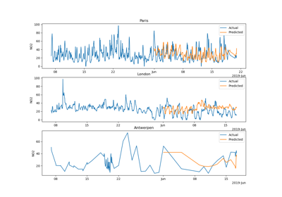

Using dirty_cat¶

Dirty categories: machine learning with non normalized strings
Dirty categories: machine learning with non normalized strings



Handling datetime features with the DatetimeEncoder
Handling datetime features with the DatetimeEncoder

Fitting scalable, non-linear models on data with dirty categories
Fitting scalable, non-linear models on data with dirty categories

Scalability considerations for similarity encoding
Scalability considerations for similarity encoding